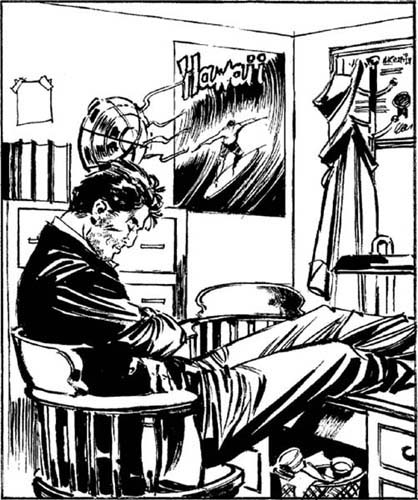

1
Listen to Part 1:

Mơ ước về California

Tôi đã mơ về Hawaii. Tôi mơ về kỳ nghỉ của mình. Trong giấc mơ, tôi ở trên bãi biển ở Hawaii. Ánh mặt trời rực rỡ chiếu lên mặt tôi. Tiếng biển rì rào quanh tôi.
Nhưng đó chỉ là một giấc mơ. Ba tuần trước, tôi đã nằm dài trên bãi biển ở Hawaii. Nhưng bây giờ tôi không ở Hawaii. Tôi mơ màng trong văn phòng của mình ở Los Angeles. Tôi đã trở về sau kỳ nghỉ và không có việc gì làm. Không ai muốn thuê tôi. Tôi đến văn phòng mỗi ngày, nhưng điện thoại không đổ chuông. Vì vậy, tôi đã ngủ gật trên ghế và mơ về Hawaii.
Tôi đã mơ một giấc mơ tuyệt vời. Trời nắng nóng. Tiếng biển ầm ầm và có một người phụ nữ xinh đẹp đứng cạnh tôi.
Đột nhiên, có một giọng nói trong giấc mơ của tôi. Ai đó đang gọi tên tôi.
‘Ông Samuel! Ông Samuel, dậy đi! Xin hãy dậy đi! Tôi muốn nói chuyện với ông.’
Tôi mở mắt ra. Tháng 4 ở Los Angeles. Ánh nắng gay gắt chiếu vào mặt tôi. Ánh nắng chiếu qua cửa sổ văn phòng. Và có một người phụ nữ đứng bên cạnh tôi. Cô ấy đang gọi tên tôi. Nhưng cô ấy giận tôi.
‘Ông Samuel. Thức dậy đi! Sao ông lại ngủ vào lúc 11 giờ 45 sáng?’
Người phụ nữ khoảng hai mươi lăm tuổi. Cô ấy có mái tóc dài đen. Cô ấy mặc một chiếc váy ngắn màu xanh lá cây và một chiếc áo khoác da màu nâu. Cô ấy có một khuôn mặt đáng yêu.
Listen to Part 2:
‘Có lẽ người phụ nữ này là một khách hàng,’ tôi nghĩ. ‘Có lẽ cô ấy sẽ thuê tôi. Có lẽ cô ấy có việc làm cho tôi.’
Tôi cười với người phụ nữ. Nhưng cô ấy không cười với tôi.
‘Ông có phải là Lenny Samuel, thám tử tư không?’ cô ấy hỏi.
‘Vâng, tôi là Lenny,’ tôi trả lời. ‘Xin mời ngồi.’ Tôi chỉ vào một chiếc ghế gỗ ở phía bên kia bàn làm việc của tôi.
Người phụ nữ nhìn quanh văn phòng của tôi. Cô ấy nhìn vào đồ đạc cũ và cửa sổ bẩn. Cô nhìn vào tấm rèm mù hỏng và những cốc cà phê bằng nhựa trong thùng rác. Sau đó, cô ấy nhìn tôi. Tôi đã không cạo râu. Và bộ vest cùng mái tóc của tôi thật bù xù. Người phụ nữ không nói gì.
Đột nhiên, cô ấy lấy một chiếc khăn tay ra khỏi túi xách. Cô lau bụi trên ghế và ngồi xuống.
‘Ông Samuel,’ cô ấy nói. ‘Tôi thấy tên và địa chỉ của ông trong danh bạ điện thoại. Ông có rẻ không? Và ông có phải là một thám tử giỏi không?’
‘Tôi không giỏi,’ tôi trả lời. ‘Tôi là giỏi nhất. Thám tử tư giỏi nhất ở L.A.’
Người phụ nữ cười lớn. ‘Ông nói đùa à?’ cô ấy nói. ‘Những thám tử tư giỏi nhất thì có thư ký. Và những thám tử tư giỏi nhất không có văn phòng bẩn thỉu, lộn xộn. Nhưng tôi muốn thuê ông. Ông sẽ nhận làm việc cho tôi chứ, ông Samuel?’
‘Cô muốn tôi làm gì?’ tôi hỏi.
Listen to Part 3:
Tôi không thích người phụ nữ này. Cô ấy thật thô lỗ. Nhưng tôi cần tiền. Tôi cần tiền nhanh chóng. Kỳ nghỉ của tôi ở Hawaii đã tiêu tốn 1000 đô la. Tôi đã vay tiền. Bây giờ tôi phải trả lại tiền.
Tôi đã không vay 1000 đô la từ ngân hàng. Tôi đã vay Herman. Herman là vệ sĩ. Văn phòng của anh ta ở cạnh văn phòng của tôi. Anh ta làm việc cho những ngôi sao điện ảnh. Anh ta rất cao to - hơn hai mét - và nặng một trăm bốn mươi kg. Bây giờ Herman muốn lấy lại tiền của anh ta. Và khi Herman muốn điều gì đó, anh ta luôn đạt được điều đó.
Tôi lại cười với người phụ nữ.
Cô ấy không cười với tôi. Cô ấy đứng dậy khỏi ghế và đi đến cửa sổ. Văn phòng của tôi ở tầng bốn của một tòa nhà cũ.
Người phụ nữ nhìn xuống đường. Sau đó, cô ấy quay lại.
‘Ông Samuel, tôi muốn ông tìm The Chief,’ cô ấy nói. ‘Hôm qua, ngài ấy đã biến mất. Có điều gì đó đã xảy ra với ngài ấy - điều gì đó tồi tệ.’
‘Được rồi,’ tôi nói. Tôi lấy một cuốn sổ ghi chép và một cây bút ra khỏi bàn làm việc của mình. ‘Xin hãy mô tả về ngài ấy. Nhưng tôi phải nói với cô một điều. Tôi sẽ làm hầu hết mọi công việc. Nhưng có một việc tôi sẽ không làm. Tôi sẽ không tìm kiếm những người chồng đã biến mất. The Chief có phải là chồng cô không?’
‘Không,’ người phụ nữ nói. ‘The Chief không phải là chồng tôi. The Chief là một con ngựa!’